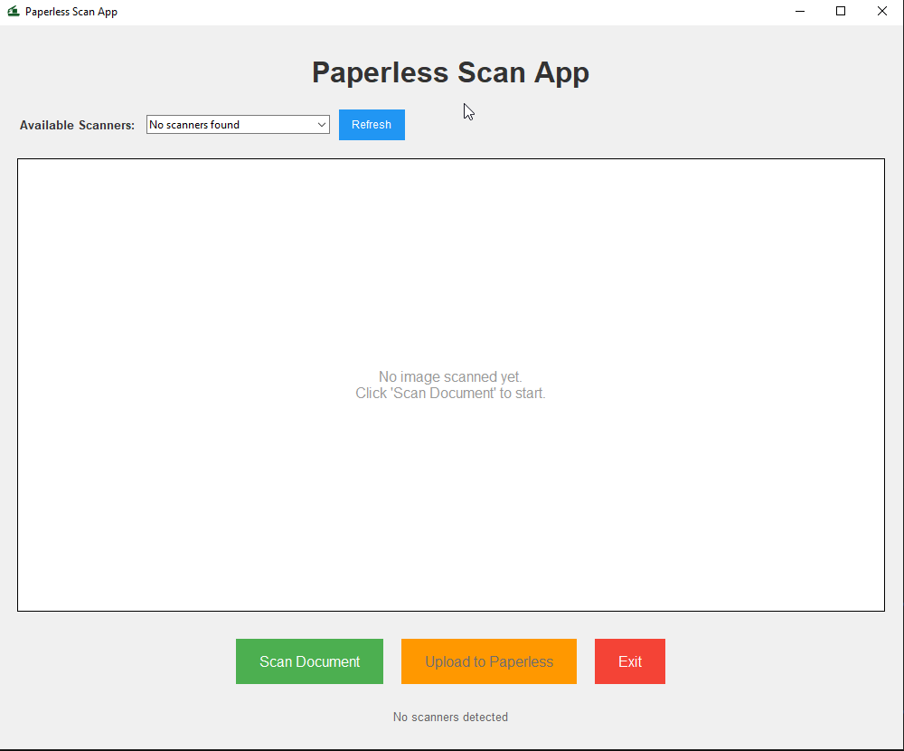

Overview
A desktop application that streamlines the process of scanning documents and uploading them to Paperless‑ngx. Tired of scanning, logging in, uploading, and cleaning up? This app does it all in one workflow.
One‑Click Scanning
Scan documents directly with a simple button click.
AI Filenames
Smart suggestions using OpenAI or Google Gemini.
Paperless‑ngx Upload
Send documents with proper metadata in seconds.
Auto Scanner Detection
Find and manage available scanners automatically.

Installation
Prerequisites
- Python 3.10 or higher
- Windows, macOS, or Linux with a compatible scanner
- Running Paperless‑ngx instance
- Optional: OpenAI API key or Google Gemini API key
Paperless API Token
- Log into your Paperless‑ngx instance
- Go to Settings → Users → Your User → API Tokens
- Create a token with appropriate permissions
Configure

Usage
Run from source
python app.py- Select your scanner (if multiple are available)
- Click "Scan Document"
- Enter a filename or accept the AI suggestion
- Click "Save" to save locally
- Click "Upload to Paperless"
Build a standalone app
For macOS packaging via py2app:
python setup.py py2appGeneric build (e.g., Windows/Linux) via PyInstaller:
pyinstaller app.py -n paperless-scanner --icon icon.icoConfiguration
Paperless‑ngx
api_url: your instance URL (http/https)api_token: API token (Profile → API Auth Token)
AI (optional)
openai_api_keyorgemini_api_key
Supported Scanners
Designed to work with most scanners supported by your OS. Tested devices include:
Brother
- DS940DW
- DS640
- RDS740D
Epson
- ES50
HP
- HPPS200
Troubleshooting
Scanner not detected
- Ensure your scanner is connected and powered
- Verify drivers are installed (WIA/SANE/ICA as applicable)
- Refresh the scanner list
Upload fails
- Verify Paperless‑ngx URL and API token
- Ensure the instance is reachable
- Confirm token permissions
AI suggestions not working
- Check your OpenAI or Gemini API key
- Confirm connectivity and credits
- Try switching providers
Contributing
- Fork the repository
- Create a feature branch
- Make changes
- Run tests
- Open a pull request
License
Released under GPL v3. See License.md for the full text.